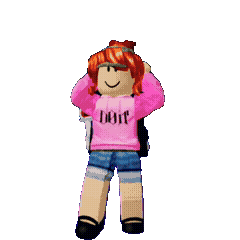
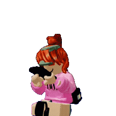

¡Ay, y cómo olvidar las tardes de Gacha, en las que intentábamos conseguir los ídolos más exclusivos para presumirlos con los demás jugadores! Tengo que confesar que odié mi suerte en este tipo de juegos: nunca me tocaban las cartas que quería 😣. Pero como siempre, tú estabas ahí echándome la mano. Gracias a eso pude conseguir a mis chicos guapos – aún sigo presumiendo a mi Félix en ese juego 😅
